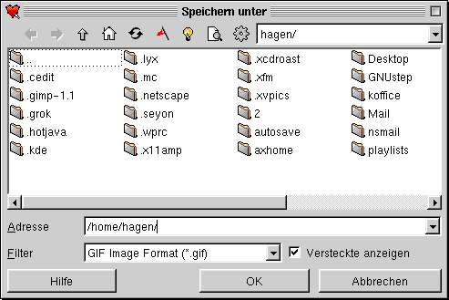

Um eine Freihandzeichnung anzufertigen, gehen man folgt vor:
Um eine Freihandzeichnung anzufertigen, gehen man folgt vor:
Die Bedienung des KIllustrators ist intuitiv erlernbar und stark an Zeichenproramme angelehnt, die sich unter Windows bereits einen Namen gemacht haben. Die verwendeten Tastenkürzel entsprechen denen, die unter http://www.kde.org/standards.html als KDE-Standards festgelegt sind.
Bei den verschiedenen Aktionen besteht, wenn es sinnvoll ist, die Möglichkeit der Verwendung der STRG-Taste. Wird diese Taste gedrückt gehalten, so wird die entsprechende Aktion proportional ausgeführt. (d.H. x und y Richtung werden gleich behandelt.) Wenn man beispielsweise beim Aufziehen eines Rechteckes die STRG-Taste drückt, so zeichnet man ein Quadrat.
Einige Funktionen können auch gleichzeitig auf mehrere selektierte Objekte angewandt werden. Ich lasse diese Betrachtung der Einfachkeit halber außen vor.
Das prinzipielle Vorgehen, um ein 2D-Primitiv zu zeichnen, besteht aus folgenden Schritten:
Der zweite Schritt variiert bei den verschiedenen 2D-Primitiven. Daher gehe ich seperat auf jedes ein. Das Icon des Knopfes, der zur Auswahl des entsprechenden Objekttypes gedrückt werden muß, habe ich auch mit aufgeführt, obwohl die Icons eigentlich eindeutig die Funktion des Knopfes beschreiben.
Um eine Freihandzeichnung anzufertigen, gehen man folgt vor:
 Mit diesem Tool können Polygonzüge gezeichnet werden. Im KIllustrator ist eine Linie ein Polygon, welches nur aus einer Linie besteht. Daher werden diese beiden Objekte im KIllustrator mit einem Tool gezeichnet.
Mit diesem Tool können Polygonzüge gezeichnet werden. Im KIllustrator ist eine Linie ein Polygon, welches nur aus einer Linie besteht. Daher werden diese beiden Objekte im KIllustrator mit einem Tool gezeichnet.
Um eine Linie zu zeichnen, geht man wie folgt von:
Um einen Pfad zu zeichnen, geht man wie folgt vor:
Um einen geschlossenen Polygonzug zu zeichnen, geht man wie beim Pfad vor. Der Unterschied liegt nur im Beenden des Polygonzuges. Um das Polygon zu schließen, hält man die Schift-Taste gedrückt, wenn man den abschließenden Rechsklick macht. Dadurch wird
eine Linie von dem zuletzt mit einem Linksklick gesetzten Punkt zum Anfangspunkt des Polygonzuges gezeichnet.
 Bezierkurven zu zeichnen ist oftmals ein Problem, nicht so jedoch mit dem KIllustrator. Man gehe wie folgt vor:
Bezierkurven zu zeichnen ist oftmals ein Problem, nicht so jedoch mit dem KIllustrator. Man gehe wie folgt vor:
 Um ein Rechteck zu zeichnen, geht man wie folgt vor:
Um ein Rechteck zu zeichnen, geht man wie folgt vor:
 Das Tool für gleichmäßige Polygone ist eine einfache Möglichkeit, gleichseitige Dreiecke, Vierecke, etc. zu zeichnen, wenn man dies nicht über einen Polygonzug selbst machen will. Das Vorgehen hierbei ist folgendes:
Das Tool für gleichmäßige Polygone ist eine einfache Möglichkeit, gleichseitige Dreiecke, Vierecke, etc. zu zeichnen, wenn man dies nicht über einen Polygonzug selbst machen will. Das Vorgehen hierbei ist folgendes:

 Um eine Ellipse zu zeichnen, geht man wie folgt vor:
Um eine Ellipse zu zeichnen, geht man wie folgt vor:
*Vereinfacht gesagt ist ein Umrechteck ein Rechteck, daß man um die Ellipse zeichnen kann, wobei die Kanten des Rechteckes Tangenten der Ellipse sind.
 Dieses Tool dient zum Einbinden von Texten in eine KIllustratorzeichnung. Man gehe dazu wie folgt vor:
Dieses Tool dient zum Einbinden von Texten in eine KIllustratorzeichnung. Man gehe dazu wie folgt vor:
Wie jedes Zeichentool bietet auch der KIllustrator mannigfaltige Möglichkeiten, gezeichnete Objekte zu rotieren, zu skalieren, zu verschieben; kurz gesagt zu transformieren. Dieser Abschnitt beschreibt nun, wie man entsprechende Transformationen durchf ühren kann. Das Icon, welches unter den Punkten zugeordnet ist, ist jeweils vorher in der Iconleiste zu wählen.
 Unter Rotation versteht man das Drehen eines Objektes um seinen Mittelpukt. Alle gezeichneten Objekte können gedreht werden. Man gehe wie folgt vor, um ein Objekt zu drehen:
Unter Rotation versteht man das Drehen eines Objektes um seinen Mittelpukt. Alle gezeichneten Objekte können gedreht werden. Man gehe wie folgt vor, um ein Objekt zu drehen:
Unter skalieren versteht man das Vergrößern bzw. Verkleinern von Objekten. Alle gezeichneten Objekte können skaliert werden. Zum Skalieren von Objekten geht man wie folgt vor:
Zum Verschieben von Objekten geht man wie folgt vor:
 Neben den Transformationen von ganzen Objekten besteht auch die Möglichkeit einzelne Teile von Objekten zu manipulieren. Wenn man auf das Icon geklickt hat, öffnet sich ein Untermenü, über welches man die folgenden Änderungen auswählen kann.
WICHTIG ! Das Objekt, das auf diese Art verändert werden soll, muß vorher selektiert sein! Wählt man daraufhin das Punktmanipulationstool, so ändert sich der Rahmen des Objektes in leere Vierecke.
Neben den Transformationen von ganzen Objekten besteht auch die Möglichkeit einzelne Teile von Objekten zu manipulieren. Wenn man auf das Icon geklickt hat, öffnet sich ein Untermenü, über welches man die folgenden Änderungen auswählen kann.
WICHTIG ! Das Objekt, das auf diese Art verändert werden soll, muß vorher selektiert sein! Wählt man daraufhin das Punktmanipulationstool, so ändert sich der Rahmen des Objektes in leere Vierecke.
 Zum Verschieben eines einzelnen Objektpunktes geht man wie folgt vor:
Zum Verschieben eines einzelnen Objektpunktes geht man wie folgt vor:
 Diese Funktion ermöglicht es komplexen Objekten einen Manipulationspunkt hinzuzufügen: Man klickt dafür einfach auf die Stelle des Objektes, an der der Punkt gesetzt werden soll.
Diese Funktion ermöglicht es komplexen Objekten einen Manipulationspunkt hinzuzufügen: Man klickt dafür einfach auf die Stelle des Objektes, an der der Punkt gesetzt werden soll.
 Mit dieser Funktion kann man durch einfaches Anklicken Punkte aus Objekten entfernen.
Mit dieser Funktion kann man durch einfaches Anklicken Punkte aus Objekten entfernen.
Will man ein Objekt einfach mit einer Farbe füllen, ist es ausreichend, dieses zu selektieren und mit der linken Maustaste auf die gewünschte Farbe in der Farbauswahlleiste zu klicken. Ist die gewünschte Farbe nicht dabei oder soll zum Füllen ein Muster
oder ein Farbverlauf verwendet werden, geht man wie folgt vor.
Der KIllustrator bietet eine Vielzahl von Hilfsmitteln zum Positionieren von Objekten. Er ermöglicht ein punktgenaues Zeichnen und ein späteres Ausrichten der Objekte.
Das Gitter ist eine Möglichkeit, schon beim Zeichnen sehr genau zu arbeiten. Es kann aber auch nur als Anhalt angesehen werden. Folgende drei Aktionen sind zum Einstellen von Gittern möglich. (In Klammern steht als erstes, über welche Menüpunkte man di e entsprechende Funktion auslösen kann und als zweites, was sie bewirkt.)
Hilfslinien sind neben dem Gitter eine Möglichkeit bereits beim Zeichnen Perfektion walten zu lassen. Der Funktionsumfang entspricht dem des Gitters und auch die Funktionsaufrufe sind äquivalet zu finden. Sie haben gegenüber dem Gitter den Vorteil, daß man die Abstände zwischen den einzelnen Hilflinien frei variieren kann. Der KIllustrator ermöglicht vertikale und horizontale Hilfslinien.
Diese Positionierungsart greift nach dem Zeichnen
eines Objektes. Man
selektiere das auszurichtende Objekt und Klicke mit der rechten Maustaste in dieses. Nun wählt man den Menüpunkt "Ausrichten" und erhält folgendes Dialogfenster:
In der mir vorliegenden Version funktioniert nur das Ausrichten auf der Seitenmitte. Ich werde diesbezüglich noch einmal mit Kai-Uwe sprechen und hoffe, daß in der nächsten Version mehr Funktionalität zum Ausrichten implementiert ist.
Das Ausrichten eines Textes an einem Pfad ist ein sehr
nützliches Tool,
wenn man z.B. Banner gestalten will. Ist der entsprechende Pfad gezeichnet, geht man wie folgt vor, um an ihm einen Text auszurichten:
Folgende Objekte können als Pfad verwendet werden:
Einzelne Objekte können zu Gruppen zusammengefaßt werden. Dies ist vor allem dann interessant, wenn man komplexe Figuren aus einzelnen Objekten zusammensetzen und diese Figuren dann als einzelnes Objekt betrachten will. Zum Gruppieren von Objekten geht man wie folgt vor:
Das Schichtenkonzept läßt sich am einfachsten an Papierzeichnungen erklären. Jede Schicht entspricht einem Blatt. Standartmäßig sind alle Blätter transparent, können beschrieben und verschickt werden. Im KIllustrator entsprechen diese drei Eigenschafte n folgende Funktionen:
...
Zum Speichern von Zeichnungen gibt es im großen und ganzen zwei Wege. Zum einen, über den Menüpunkt "Datei" und zum anderen über das Diskettenicon in der Iconleiste. Hat man die aktuelle Zeichnung neu erstellt und noch nie gespeichert, so gelangt man a uf jeden Fall in den Dialog, in dem man den Dateinamen der zu speichernden Zeichnung bestimmen kann.
Ist der Zeichnung bereits ein Dateiname zugewiesen, so wird dieser verwendet, es sei denn, man benutzt den Menüpunkt "Speichern unter".
Man sollte als Dateierweiterung .kil verwenden. Nur so ist es gewährleistet, daß der KIllustrator diese Datei auch problemlos wiederfindet.
Auch zum Öffnen von Dateien gibt es zwei Wege. Entweder klickt man auf das entsprechende Icon in der Iconleiste oder man benutzt den Menüpunkt "Datei" und dessen Menüeintrag "Datei öffnen". Auf beiden Wegen gelangt man in den "Öffnen"-Dialog.
Da diese Dialogform dem KDE-Standard entspricht, soll an dieser Stelle nicht auf jeden Knopf eingegangen werden. Hat man die zu öffnende Datei selektiert, so erscheint im rechten Teil des Dialoges eine Vorschau. Nun kann man die Datei entweder mittels Doppelklick auf den Dateinamen oder über den Knopf "OK" laden.
Leider werden die meisten Programme daran gemessen, wie viele Fremdformate sie unterstützen. Damit Software jedoch einen gewissen Grad Flexibilität hat, sind solche Import- und Exportschnittstellen notwendig. Der KIllustrator kann diverse Dateiformate in Zeichnungen einbinden (importieren):
Das Importieren von Objekten in eine KIllustratorzeichnung funktioniert leider
nicht für alle Formate auf die gleiche Weise. Die meisten Importfilter findet
man im Menü "Bearbeiten" unter "Einfügen". Der Unterpunkt "Clipart" ermöglicht
das Einfügen von .wmf Dateien. Die Filter für pixelorientierte Bilder befinden
sich im Unterpunkt "Bitmap". Um XFig-Zeichnungen oder eine ander
KIllustrator-Zeichnung zu importieren, muß man den Menüeintrag "Importieren"
im "Datei"-Menü benutzen.
Die jeweiligen Dialoge entsprechen dem Dialog zum Datei öffnen.
Über das Menü "Datei" und den Menüpunkt "exportieren" gelangt man in folgenden Dialog:

Prinzipiell entspricht er dem Dialog zum speichern von Dateien. Der einzige Unterschied besteht in der Tatsache, daß man das Dateiformat festlegen kann.
Die Funktionen Undo und Redo ermöglichen es, ein wenig mit den verschiedenen Tools "herumzuspielen". Wenn man merkt, daß der Schritt, den man gerade gemacht hat, nicht gefällt, so verwendet man einfach Undo um ihn rückgängig zu machen. Stellt man nach einem Undo fest, daß die rückgänging gemachte Aktion doch nicht so schlecht gewesen ist, kann man sie mit Redo wiederholen. Der KIllustrator bietet die Möglichkeit alle gemachten Aktionen zu wiederrufen. D.h. das Undo funktioniert solange, bis die Zeichnung wieder leer ist. Man sollte aber beachten, daß Undo und Redo immer in der Reihenfolge wirken, in der gezeichnet wurde. Es ist also nicht möglich nur den vorletzten Schritt rückgängig zu machen und den letzten zu behalten.
 Das Zoomen, wie das Ändern der Ansichtsgröße auch
genannt
wird, kann auf zwei Wegen erfolgen. Der einfachste ist das Auswählen eines Zoomfaktors aus dem Ausklappmenü in dem standardmäßig 100% steht. Der zweite besteht in der Verwendung der Lupe. Klickt man mit der linken Maustaste in die Zeichnung, so wird die R
egion um den Klickpunkt auf den nächste Zoomfaktor vergrößert. Folgende Zoomfaktoren stehen zur Verfügung:
Das Zoomen, wie das Ändern der Ansichtsgröße auch
genannt
wird, kann auf zwei Wegen erfolgen. Der einfachste ist das Auswählen eines Zoomfaktors aus dem Ausklappmenü in dem standardmäßig 100% steht. Der zweite besteht in der Verwendung der Lupe. Klickt man mit der linken Maustaste in die Zeichnung, so wird die R
egion um den Klickpunkt auf den nächste Zoomfaktor vergrößert. Folgende Zoomfaktoren stehen zur Verfügung:
Der Umgang mit Farben ist beim KIllustrator sehr
einfach gestaltet. Im
Grunde könnte man ihn mit einem Satz beschreiben, wenn da nicht noch zusätzliche Funktionen wären. Allgemein sei gesagt, ein Linksklick in die Farbauswahlleiste ändert die Füllfarbe, ein Rechtsklick hingegen die Zeichen- bzw. Rahmenfarbe eines selektierte
n Objektes. Ist der gewünschte Farbton nicht in dieser Leiste enthalten, muß man zum Ändern der Zeichenfarbe wie folgt vorgehen.

Funktionen, wie z.B. das Füllen von Objekten, können als Standard für neu zu zeichnenden Objekte definiert werden. Dies geschieht, indem man die entsprechende Funktion aufruft, ohne ein Objekt selektiert zu haben. Aus Sicherheitsgründen muß man dann no ch eine Bestätigung der globalen Änderung vornehmen.